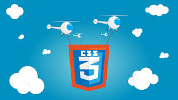

Objetivo general
- Diseñar una OVI con informacion relevante acerca de propiedades básicas de CSS DISPLAY
Objetivo especificos
- Diferenciar cuando un elemento es inline,block o si es el caso inline-block a la hora de elegir el comportamiento de nuestro elemento en la página
- Usar adecuadamente las propiedades CSS Display para conocer el espacio que ocupa cada elemento dentro de nuestro sitio web
- Conocer la importancia del manejo de CSS Display como parte fundamental de la estructura de nuestra página web
Tematicas:
- INLINE: El comportamiento del elemento sea como un bloque.
- BLOCK: El elemento se renderizará en línea con otros elementos.
- INLINE-BLOCK: El elemento tendrá un comportamiento mezcla entre los dos anteriores
|
|

|